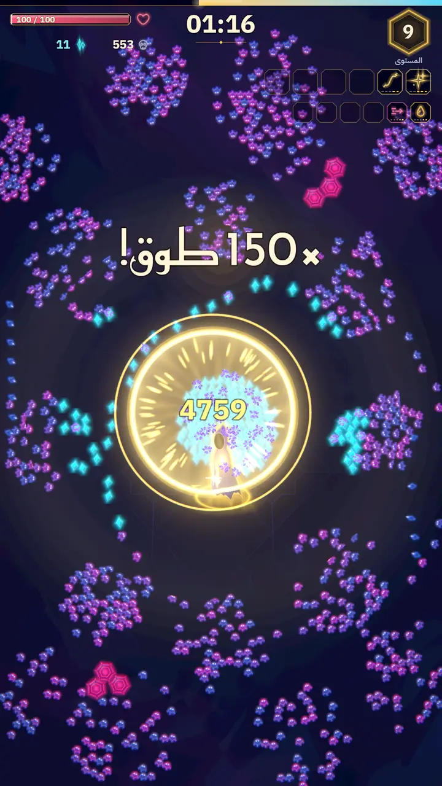
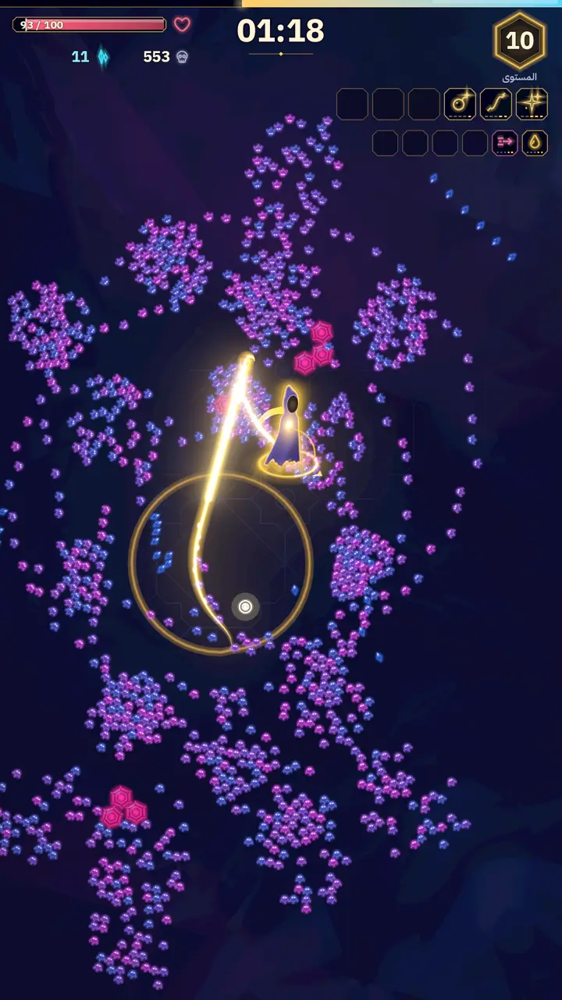
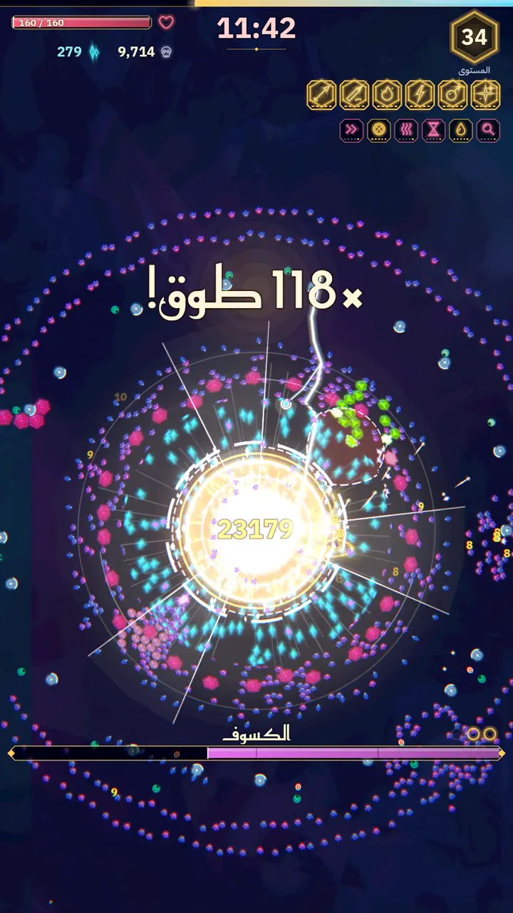

لعبة كمبيوتر · ويندوز
طوّق
ارسم دايرة حول الأعداء… وطوّقهم
ذيل النور اللي وراك يصير حبل. لف حول الموجة، اقفل الدايرة، وتنفجر كلها مرة وحدة.
حمّلها للكمبيوتر (ويندوز)ملف ZIP · 45 ميغابايت مجانيةصور من اللعبة



كيف تلعب
تحرّك ولف حول الأعداء، وإذا قفلت الدايرة ينفجر كل اللي داخلها. اجمع الجواهر واختر ترقية مع كل مستوى.
| الحركة | WASD أو الأسهم |
| اندفاع | Space |
| اختيار بطاقة | 1–4 أو الأسهم + Enter |
| تبديل البطاقات | R |
| استبعاد بطاقة | B |
| إيقاف مؤقت | Esc |
تدعم يد التحكم بالكامل، وما تحتاج ماوس.
أول تشغيل
فك ضغط الملف وشغّل اللعبة. لأن النسخة غير موقّعة، ممكن ويندوز SmartScreen يطلع تحذير أول مرة. اضغط «مزيد من المعلومات ← تشغيل على أي حال».
الحقوق
- محرك Godot Engine، رخصة MIT.
- الخطوط: Reem Kufi و IBM Plex Sans Arabic و Alexandria، رخصة SIL OFL 1.1.
- كل الرسوم مرسومة بالكود، وكل الأصوات مولّدة بأدواتنا. ما فيها أي أصول من طرف ثالث.